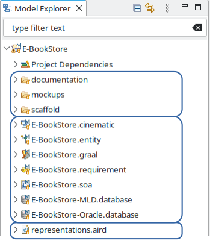
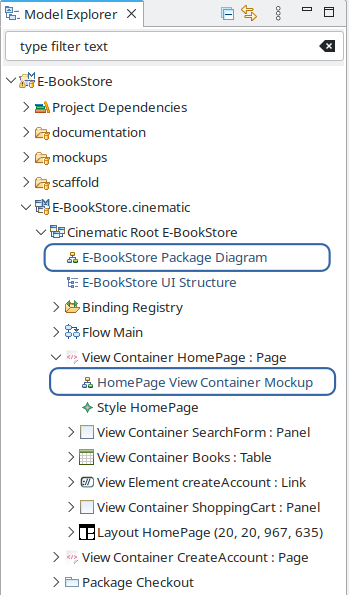
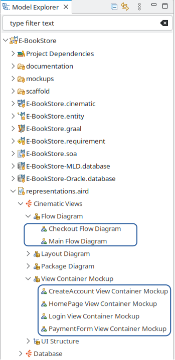
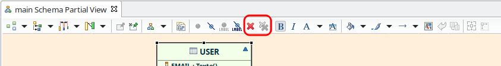
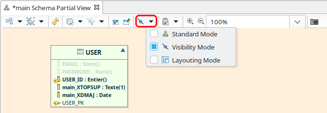
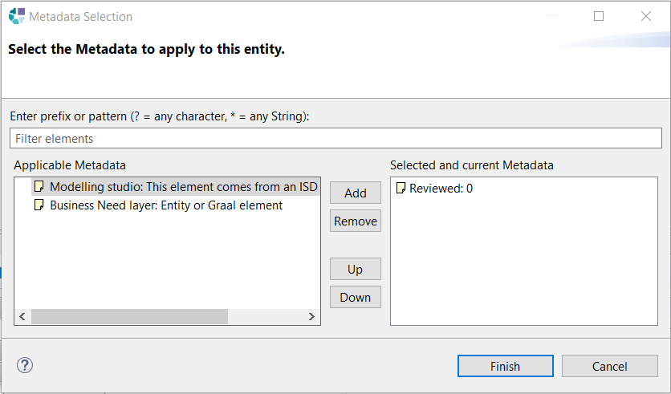

Copyright © 2008, 2024 Obeo - All rights reserved. This program and the accompanying materials are made available under the terms of the Eclipse Public License v2.0
IS-Designer est un studio de conception de systèmes logiciels permettant de capturer le besoin et de décrire l’architecture de systèmes logiciels.
IS-Designer est basé sur le studio de modélisation Obeo Designer, qui apporte la notion de projet de modélisation.
Un projet de modélisation IS-Designer est constitué de dossiers et de ressources. Les dossiers peuvent contenir des ressources, ou d’autres dossiers.
Les ressources peuvent être classées en trois types :

Le projet peut être parcouru suivant deux axes : structure des modèles sémantiques, ou bien types de représentation.
1- Suivant le structure des modèles sémantiques :
Les ressources sémantiques peuvent être dépliées de manière à laisser apparaître une structure arborescente sur les modèles. Lorsqu’une représentation existe pour un élément de modèle donné, celle-ci est présentée sous l'élément en question. Un double clic dans le Model Explorer permet d’ouvrir la représentation.
Même si elle sont présentées sous des éléments du modèle sémantique, les représentations ne sont pas persistées dans le modèle sémantique mais dans la ressource aird.

2. Suivant les types de réprésentation :
La ressource aird peut elle aussi être dépliée pour laisser apparaître la structure des points de vue appliqués au projet. Sous chaque point de vue sont énumérés les types de représentations, et sous chacun des types de représentations les représentations elles mêmes. Cette vue peut être utile losque l’on connaît le type de représentation que l’on souhaite consulter sans savoir sur quel élément sémantique il a été défini.

L’outillage environnement est le socle commun aux différents types de modeleurs que le studio IS-Designer fournit.
La fonctionnalité «Vue Partielle» permet de créer une représentation dont le contenu présenté n’est pas exhaustif.
Par défaut, les différents types de représentation fournis par le studio sont synchronisés avec le contenu du modèle. Ainsi par exemple pour un diagramme d’entités qui est créé sur un Namespace, le diagramme présente tout le contenu du Namespace. Ce mode de fonctionnement offre à l’utilisateur la garantie que le contenu des diagrammes est toujours en cohérence avec le contenu du modèle. Les diagrammes synchronisés ont une couleur de fond blanche :
Les «Vues Partielles» fournissent un moyen de constituer une représentation dont le contenu n’est pas exhaustif. Lorsqu’elle est créée, une Vue Partielle est vide, et elle est peuplée en y glissant et déposant des éléments depuis le Model Explorer. Ces vues peuvent être utiles pour faire un focus sur une sous partie d’un modèle , en particulier pour les gros modèles. Les vues partielles ont une couleur de fond spécifique les distinguant clairement des diagrammes classiques, et alertant sur le caractère non exaustif du contenu présenté :

Les représentations classiques et les Vues Partielles peuvent être créées à partir du menu contextuel sur un élément du Model Explorer, dans le sous menu «New Representation». La première partie du menu jusqu'à l’entrée «Other...» permet de créer des représentations classique, les entrées présentées après «Other...» permettent de créer des Vues Partielles :

Il est possible de convertir un diagramme synchronisé classique en Vue Partielle par l’action du menu contextuel «Unsynchronized» sur le fond du diagramme :

Les vues partielles sont conçues de manière à ne pas permettre une suppression d'élément du modèle de manière accidentelle par une pression sur la touche Suppr. L’outil de suppression est donc désactivé, seul l’outil de suppression du diagramme est activé :

Le raccourci clavier pour la suppression d’un élément du diagramme est Shift+Ctrl+D.
Les éléments de liste contenue ne peuvent pas être supprimés du diagramme, par contre ils peuvent être cachés. Une fois caché, l'élément fait toujours partie du diagramme mais n’est simplement pas visible. Les éléments cachés peuvent être rendus visible en utilisant le mode «Visibility» du diagramme. Ils sont alors affichés de manière estompée :

La mise en forme d’un diagramme ou d’une vue partielle peut être reproduite sur une autre en utilisant les actions suivantes :
Les modèles environnements sont principalement utilisés pour définir des librairies de types dans le but de rendre ces types disponibles dans les modèles Safr@n.
Avant la version Safr@n 1.9 le modèle «obeo.environment» était ajouté par défaut dans les dépendances des projets modeling. Depuis la version Safr@n 1.9 il est possible de choisir les ressources environnements ajoutées lors de la création d’un projet modeling, ainsi que de gérer les ressources environnement d’un projet.
A la création d’un projet modeling la ressource «obeo.environment» est ajoutée par defaut.
Ce comportement repose sur l’utilisation du point d’extension «org.obeonetwork.dsl.environment.providedEnvironmentModel» qui permet de définir les modèles environnement utilisables dans le studio.
Ce point d’extenion permet de contribuer des modèles environement en définissant pour chacun d’eux :
A la création d’un projet modeling, seuls les modèles environnement dont la priorité est la plus élevée sont chargés. La ressource «obeo.environment» est contribuée à ce point d’extension avec la priorité 0. (Ainsi, si un autre modèle environement est contribué avec la priorité 0, ces deux modèles seront chargés par défaut à la création d’un projet modeling).
La boîte de dialogue «Manage Environment» permet de gérer les ressources environnement pour un projet de modélisation donné. Elle est mise à disposition par l’action «Manage environment resources» du menu contextuel d’un projet modeling, d’une ressource aird, ou de l'élément «Project Dependencies» :

La boîte de dialogue est composée d’un tableau listant toutes les ressources environnements accessibles pour le projet modeling concerné.
Les ressources environnment se trouvant dans le projet sont automatiquement actives et ne peuvent pas être désactivées. Elles sont présentées en gris.
Les ressources environnement apportées par point d’extension sont désactivables en décochant la case à cocher en début de ligne. Elles sont présentées en noir.

Le résultat de la sélection est appliqué lors de la validation de la boîte de dialogue.
Dans le cas du décochage d’une ressource, une vérification est faite pour s’assurer que les éléments contenus dans la ressource ne sont pas utilisés dans le projet modeling. Si certains éléments d’une ressource retirée du projet sont utilisés, un dialogue d’avertissement s’affiche demandant confirmation à l’utilisateur :

Ce dialogue présente sous forme d’arbre les objets qui référencent des éléments de la ressource environnement sur le point d'être retirée des dépendances du projet (ici obeo.environment). Si ce dialogue est validé, les références listées sont supprimées. Si le message d’avertissement est annulé la ressource environnement n’est pas retirée des dépendances du projet.
Il est possible que plusieurs messages d’avertissements se succèdent dans le cas où plusieurs ressources environnement sont retirées des dépendances du projet.
Remarques :
- Les changements sont appliqués mais pas sauvegardés
- Il est possible d’annuler tous les changements opérés à l’aide du raccourci clavier "Ctrl+Z.
Un assistant de création de modèles Environment est accessible via le menu :
File > New > Other ... > Environment Model (Catégorie IS Designer)

Cet assistant permet de définir

Une fois l’assistant validé, le modèle est créé.
Les modèles de définitions de métadonnées sont utlisés pour proposer à l’utilisateur final des métadonnées prédéfinies lors de la mise à jour des métadonnées d’un élément.
Un exemple d’un tel modèle est accessible via l’URI: «platform:/plugin/org.obeonetwork.dsl.environment.common/model/obeo.metadatadef».
Un modèle «.metadatadef» contient un élément racine de type
MetaDataDefinitions contenant plusieurs éléments de type
MetaDataDefinition.
Une MetaDataDefinition possède trois attributs:
title,
body et
condition.
title et
body sont le titre et le corps;
condition est une expression AQL qui sera évaluée sur un élément acceptant les métadonnées. Si l’expression retourne vrai, alors la MetaDataDefinition est proposée pour créer une métadonnée sur l'élément, sinon elle n’est pas proposée.
Si la métadonnée (Annotation) est créée sur l'élément, les attributs title et body de celle-ci auront comme valeurs celles de title et body de la MetaDataDefinition.
Exemple: Une MetaDataDefinition avec title=«Modeling studio», body=«This element comes from an ISD modeling workbench» et condition="aql:true"
pourra être applicable sur tous les éléments qui supportent des métadonnées.
Afin de contribuer un tel modèle, il faut utliser le point d’extension: «org.obeonetwork.dsl.environment.providedMetaDataDefinitionsModels».
Ce point d’extenion permet de contribuer des modèles de définitions de métadonnées en définissant pour chacun d’eux :
Ces modèles sont chargés une seule fois, lorsque l’utilisateur final ouvre la fenêtre de sélection de métadonnées pour la première fois.
Pour utiliser des métadonnées provenant d’un modèle de définitions de métadonnées (contribué via le point d’extension), l’utilisateur final doit:
Cliquer sur «...» dans l’onglet Metadatas de la vue Properties.
Si une définition de métadonnée est applicable pour l’objet contexte, l’Annotation équivalente s’affiche parmi les Annotations candidates (colonne «Applicable Metadata») dans la fenêtre qui s’ouvre:

Une définition de métadonnée est applicable sur un objet contexte si:
1. sa condition s'évalue à vrai sur l’objet contexte
2. l’objet contexte ne possède pas de métadonnée (Annotation) dont le titre est le même que celui de la définition de la métadonnée